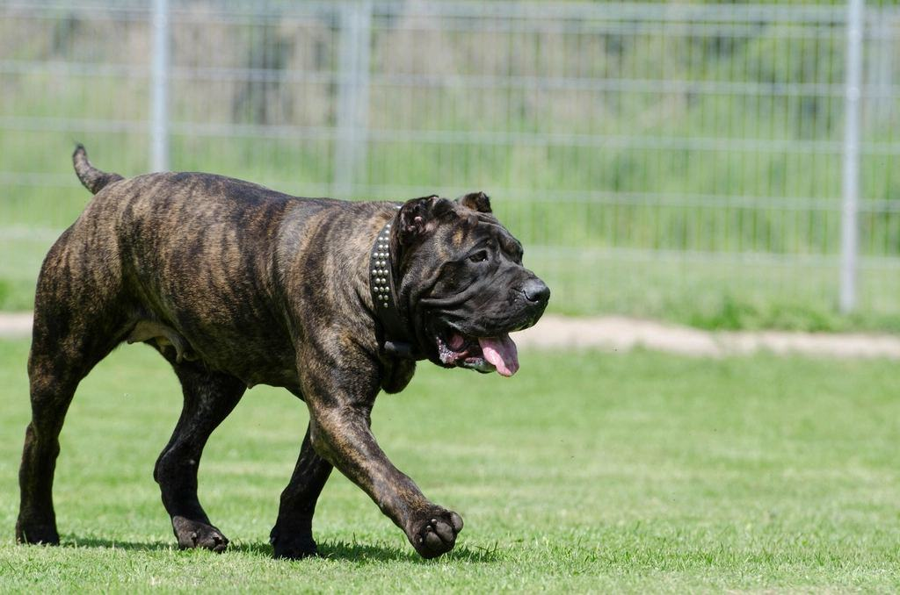
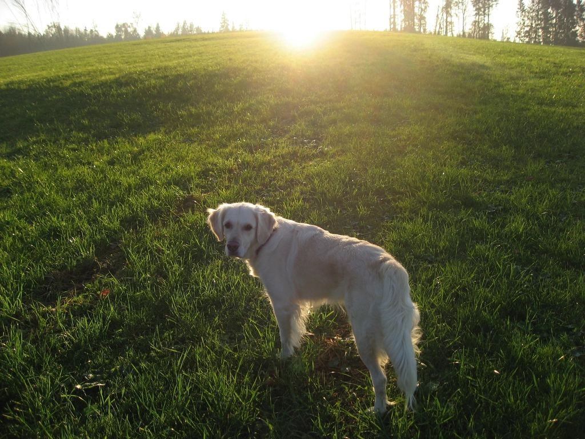
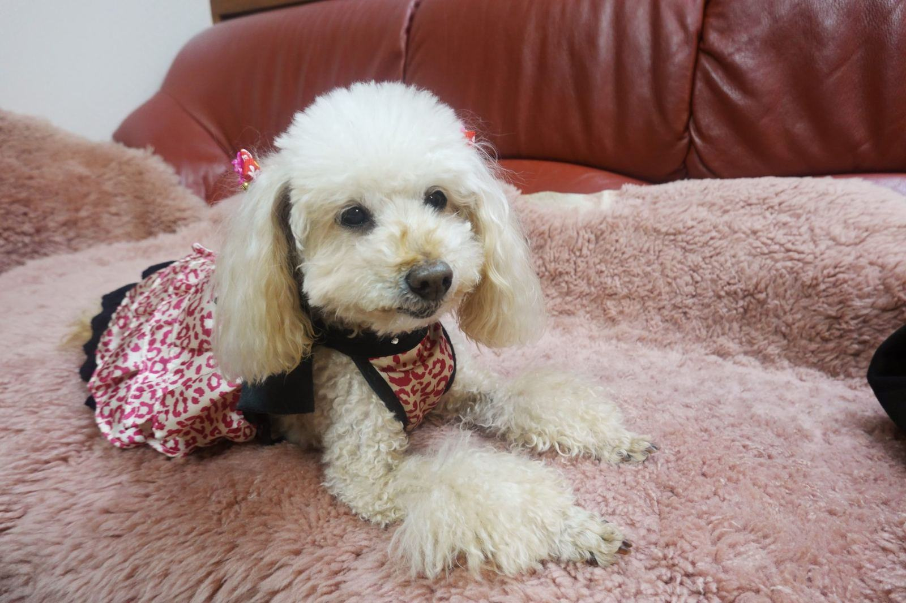
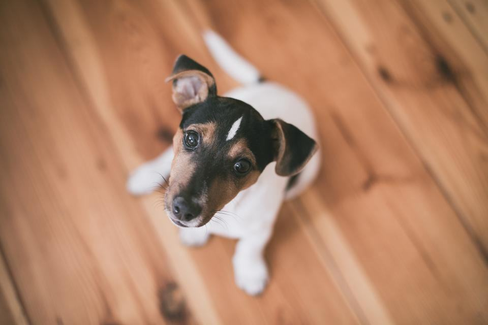
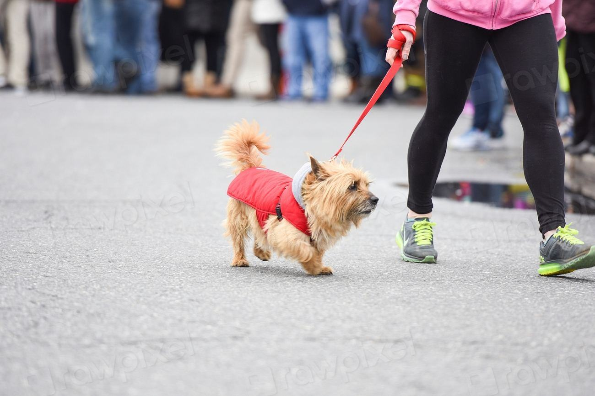
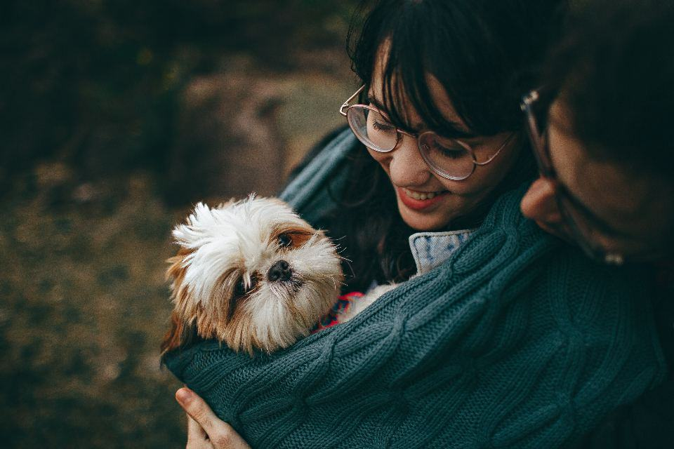
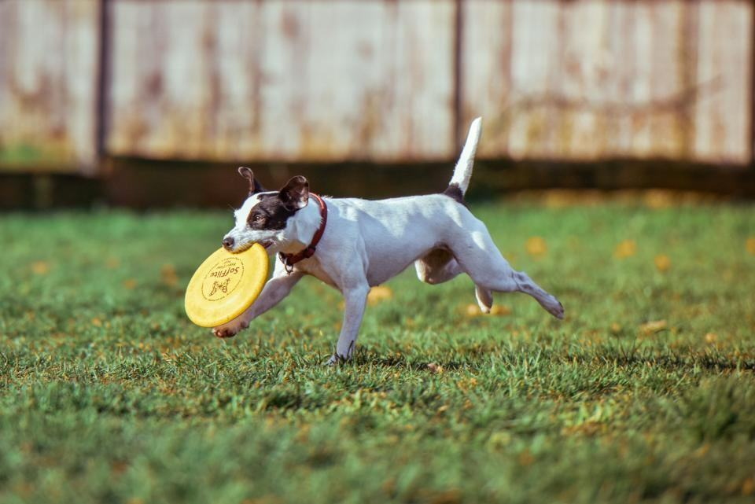

Behandlingar
Från september till maj är kunderna mest gotländska hundar från Roma, Hemse och Ljugarn. Under sommaren tredubblas trycket: semesterfirare med sandiga retrievrar, hundar som badat i tång och valpar som fått sitt första havsbad. Vi är fyra i salongen på sommaren och två på vintern.
Bofast eller på semester?

Efter havsbadet
Saltvatten torkar ut huden och sanden nöter i pälsen. Vi sköljer med ljummet sötvatten, tvättar mild och balsamerar så att pälsen inte blir sträv.
Hundar som badar dagligen får en sköljning till halva priset tredje gången samma vecka.

Sommarklipp
Långhåriga hundar blir varma av packad underull, inte av själva pälsen. Vi tunnar, borstar ut och kortar buk och tassar – men behåller täckhåret som solskydd.
Vi rakar inte hundar med dubbelpäls, inte ens i juli.

Öns egna hundar
På vintern klipper vi i lugn takt för bofasta kunder i hela Sydostgotland. Många kommer var sjätte vecka och har fast tid på tisdagar.
Gotländska stamkunder får förtur till sommartiderna.

Första havsbadet
Valpar som ska bada för första gången får gå med oss till stranden en stilla morgon, och sedan duscha i salongen. Det blir ett tryggt minne av både vatten och fön.
Valpbadet erbjuds i juni och augusti, när stranden är lugnare.
Från strand till glasskiosk
- 1

Kom från stranden
Kom direkt efter badet, gärna med hunden fortfarande blöt – då släpper sanden lättare.
- 2

Sötvattensköljning
Vi sköljer ut saltet med ljummet vatten och kontrollerar öron och tassar.
- 3

Mild tvätt och balsam
Ett milt schampo och balsam som återfuktar huden efter sol och salt.
- 4

Torr till glassen
Hunden fönas torr på verandan medan du köper glass vid kiosken bredvid.